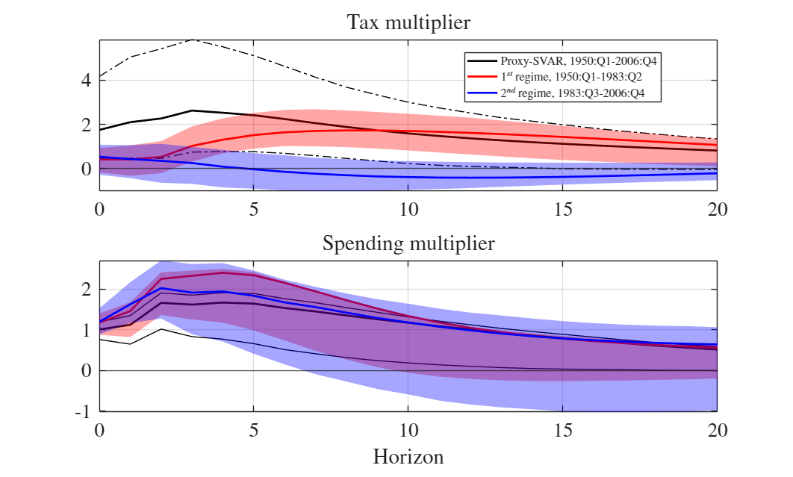

Contents
========================================================================
Main replication script
Paper: "Invalid Proxies and Volatility Changes"
Authors: G. Angelini, L. Fanelli, L. Neri
========================================================================
clearvars; close all; clc;
tic;
thisFile = mfilename('fullpath');
matlabDir = fileparts(thisFile);
scriptsDir = fullfile(matlabDir,'scripts');
funcDir = fullfile(matlabDir,'functions');
dataDir = fullfile(matlabDir,'data');
resultsDir = fullfile(matlabDir,'results');
logDir = fullfile(resultsDir,'logs');
addpath(scriptsDir, funcDir);
if ~exist(logDir,'dir'); mkdir(logDir); end
logFileName = ['console_log_' datestr(now,'yyyymmdd_HHMMSS') '.txt'];
logFile = fullfile(logDir,logFileName );
if exist(logFile,'file'), delete(logFile); end
diary(logFile);
diary on;
fprintf('\n==============================================================\n');
fprintf("'Invalid proxies and volatility changes'\n")
fprintf(' Starting replication at %s\n', datestr(now));
fprintf(' Log file: %s\n', logFileName);
fprintf('==============================================================\n\n');
matlab_version_check;
==============================================================
'Invalid proxies and volatility changes'
Starting replication at 09-Nov-2025 23:57:18
Log file: console_log_20251109_235718.txt
==============================================================
Data specifications
dataSpec = struct();
dataSpec.dataloc= 'Fiscal/Caldara Kamps';
dataSpec.columnnames = {'TAX_S','G_S','GDP_S'};
dataSpec.instrumentnames = {'TAXNARRATIVE','AG'};
dataSpec.time = 'Quarter';
dataSpec.demean_instrument= true;
dataSpec.detrend_linear = false;
dataSpec.n = numel(dataSpec.columnnames);
dataSpec.k = numel(dataSpec.instrumentnames);
dataSpec.M = dataSpec.n + dataSpec.k;
rootDir = pwd;
Configurations settings and load data
cfg = default_config_fiscal();
fprintf('--- Settings --------------------------------------------------\n');
fprintf('- VAR lags: %d\n', cfg.modelSpec.p);
fprintf('- Confidence level: %.2f\n', cfg.modelSpec.confidence);
fprintf('- Variables (Y): %s\n', strjoin(dataSpec.columnnames, ', '));
fprintf('- Instruments (Z): %s\n', strjoin(dataSpec.instrumentnames, ', '));
fprintf('- Time unit: %s\n', dataSpec.time);
fprintf('- IRF horizons: %d\n', cfg.modelSpec.horizons);
[dataSpec, cfg, DATASET] = loadAndPrepData(rootDir, dataSpec, cfg);
--- Settings --------------------------------------------------
- VAR lags: 4
- Confidence level: 0.68
- Variables (Y): TAX_S, G_S, GDP_S
- Instruments (Z): TAXNARRATIVE, AG
- Time unit: Quarter
- IRF horizons: 20
Run proxy-SVARs
[full] = run_fullsample_proxysvar(dataSpec, cfg, rootDir);
[reg, stats_reg] = run_regimes_proxysvar(dataSpec, DATASET, ...
full, cfg);
---------------------------------------------------------------
PROXY-SVAR
---------------------------------------------------------------
---------------------------------------------------------------
1) Estimate the reduced-form VAR...
First-stage F (homoskedastic): 3.55 | F (heteroskedasticy-robust): 1.71
---------------------------------------------------------------
2)Bootstrap the reduced-form VAR (MBB)...
---------------------------------------------------------------
3) Estimation of structural parameters of the Proxy-SVAR...
Local minimum possible.
fminunc stopped because the size of the current step is less than
the value of the step size tolerance.
---------------------------------------------------------------
4) Bootstrap the structural parameters of the Proxy-SVAR...
Bootstrapping structural parameters and IRFs (Full Sample)...
SVAR MBB |██████████████████████ 2 min, 31 sec ███████████████████████|100%
Bootstrapping of structural parameters is finished.
Run bootstrap diagnostic test of identification
Refs: Angelini, Cavaliere, and Fanelli (2025, JoE), and Cavaliere, Fanelli, and Georgiev (2025)
The test is a Normality test on the bootstrap estimates
Doornik-Hansen Omnibus Multivariate (Univariate) Normality Test
-------------------------------------------------------------------
Number of variables: 6
So, it is a multivariate case.
Sample size: 15
-------------------------------------------------------------------
Asymptotic statistic: 8.8045
P-value associated to the asymptotic statistic: 0.7195
With a given significance = 0.050
Data analyzed have a normal distribution.
-------------------------------------------------------------------
Omnibus Doornik-Hansen statistic: 23.6354
P-value associated to the Omnibus Doornik-Hansen statistic: 0.0228
With a given significance = 0.050
Data analyzed do not have a normal distribution.
-------------------------------------------------------------------
Build the IRFs and their confidence intervals
---------------------------------------------------------------
PROXY-SVAR WITH STABILITY RESTRICTIONS
---------------------------------------------------------------
---------------------------------------------------------------
1) Estimate the reduced-form VAR (+ MBB)...
1.a) Estimate break date and reduced-form VARs...
Estimated break date: 1983Q2 (tau 0.586)
1.b) Estimate VAR with 2 regimes...
and bootstrap
Estimate the VAR for regime 1...
Bootstrap the VAR for regime 1...
Estimate the VAR for regime 2...
Bootstrap the VAR for regime 2...
---------------------------------------------------------------
2) Estimation of structural parameters of the Proxy-SVAR via stability restrictions...
Order condition satisfied: equations=30, free parameters=27
Multistart estimation procedure with 50 random starting points
MultiStart completed the runs from all start points.
All 50 local solver runs converged with a positive local solver exitflag.
---------------------------------------------------------------
3) Identification checks and over-id restrictions test...
Regime-Change: Over-ID J (CMD): 0.744, p=0.863
Rank condition satisfied.
---------------------------------------------------------------
4) Construct IRFs by regime...
---------------------------------------------------------------
5) Bootstrap the structural parameters of the Proxy-SVAR...
Bootstrapping structural parameters (with stability restrictions)...
SVAR MBB |███████████████████████ 9 min, 2 sec ███████████████████████|100%
Bootstrapping of structural parameters is finished.
Plots and estimates
plot_multipliers(full, reg, dataSpec, stats_reg, cfg);
print_console_summary(full, reg, stats_reg,dataSpec,cfg);
Plot multipliers and CI...
---------------------------------------------------------------
Figure with multipliers is saved in results/figures/id1_figure_1.pdf
Display estimates...
---------------------------------------------------------------
---------------------------------------------------------------
Printing structural estimates of Proxy-SVAR
Parameter estimates ==================
PROXY SVAR (FULL-SAMPLE)===========================
Column 1----
B_11: & 0.013 & (0.005, 0.017)
B_21: & -0.000 & (-0.000, 0.000)
B_31: & -0.004 & (-0.005, -0.002)
phi_11: & 0.041 & (0.016, 0.060)
phi_21: & 0.000 & (0.000, 0.000)
Column 2----
B_12: & 0.002 & (0.000, 0.004)
B_22: & 0.012 & (0.011, 0.013)
B_32: & 0.003 & (0.002, 0.003)
phi_12: & -0.006 & (-0.013, 0.004)
phi_22: & 0.013 & (0.012, 0.013)
======================================
Parameter estimates ===========================
PROXY SVAR (STABILITY RESTRICTIONS)===========================
Regime 1 ===========================
G_11: \underset{(0.012 , 0.024)}{0.020}
G_12: \underset{(0.001 , 0.006)}{0.003}
G_13: \underset{(0.012 , 0.019)}{0.018}
G_21: \underset{(-0.001 , 0.000)}{-0.000}
G_22: \underset{(0.012 , 0.014)}{0.014}
G_23: \underset{(0.000 , 0.000)}{0.000}
G_31: \underset{(-0.002 , 0.001)}{-0.002}
G_32: \underset{(0.002 , 0.004)}{0.003}
G_33: \underset{(0.008 , 0.009)}{0.009}
phi_11: \underset{(-0.010 , 0.036)}{0.021}
phi_12: \underset{(-0.018 , 0.003)}{-0.011}
phi_13: \underset{(-0.030 , -0.005)}{-0.018}
phi_21: \underset{(0.000 , 0.000)}{0.000}
phi_22: \underset{(0.012 , 0.014)}{0.014}
phi_23: \underset{(-0.000 , 0.000)}{0.000}
sigma_11: \underset{(0.095 , 0.136)}{0.133}
sigma_12: \underset{(0.000 , 0.000)}{0.000}
sigma_21: \underset{(-0.000 , -0.000)}{-0.000}
sigma_22: \underset{(0.003 , 0.004)}{0.004}
Regime 2 ===========================
G_11: \underset{(0.009 , 0.017)}{0.015}
G_12: \underset{(-0.001 , 0.002)}{0.000}
G_13: \underset{(0.002 , 0.013)}{0.011}
G_21: \underset{(-0.000 , 0.000)}{0.000}
G_22: \underset{(0.006 , 0.007)}{0.007}
G_23: \underset{(0.000 , 0.000)}{0.000}
G_31: \underset{(-0.002 , 0.001)}{-0.002}
G_32: \underset{(0.001 , 0.002)}{0.002}
G_33: \underset{(0.002 , 0.004)}{0.004}
phi_11: \underset{(0.022 , 0.099)}{0.068}
phi_12: \underset{(-0.028 , 0.001)}{-0.016}
phi_13: \underset{(-0.029 , -0.004)}{-0.018}
phi_21: \underset{(0.000 , 0.000)}{0.000}
phi_22: \underset{(0.007 , 0.008)}{0.008}
phi_23: \underset{(-0.000 , 0.000)}{0.000}
sigma_11: \underset{(0.095 , 0.136)}{0.133}
sigma_12: \underset{(0.000 , 0.000)}{0.000}
sigma_21: \underset{(-0.000 , -0.000)}{-0.000}
sigma_22: \underset{(0.001 , 0.002)}{0.002}
Writing elasticity table (full + 2 regimes)...
Elasticity table written to results/tables/id1_table_3.txt

Save results
save_results(full, reg, stats_reg, dataSpec, cfg);
fprintf('\n==============================================================\n');
fprintf(' Replication finished at %s\n', datestr(now));
fprintf('==============================================================\n');
diary off;
toc;
==============================================================
Replication finished at 10-Nov-2025 00:09:29
==============================================================
Elapsed time is 731.071049 seconds.